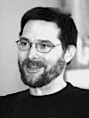

What To Do When Things Go Wrong: Recovery in Complex (Computer) Systems
[Keynote and Heart-of-Technology Lecture]
Chair: Richard P. Gabriel
Abstract
Bio
Martin Rinard is a Professor in the MIT Department of Electrical Engineering and Computer Science and a member of the MIT Computer Science and Artificial Intelligence Laboratory. His research interests include parallel and distributed computing, programming languages, program analysis, program verification, software engineering, computer security, and computer systems. Much of his current research focuses on techniques that enable software systems to to survive otherwise fatal errors or security attacks.
Professor Rinard holds a PhD in Computer Science from Stanford University. He is an ACM Fellow and has received many awards including an Alfred P. Sloan Research Fellowship, an NSF CAREER Award, and the Most Influential Paper in 20 Years Award in the area of Concurrent Constraint Programming (awarded by The Association for Logic Programming in 2004).
A tour of the Data-Context-Interaction Paradigm[Heart-of-Technology Lecture]
Chair: Shigeru Chiba
Abstract
Bio
Jim Coplien is an old programming language shark who now does world-wide consulting on Agile software development methods and architecture. He is one of the founders of the software pattern discipline, and his organizational patterns work is one of the foundations of both Scrum and XP. He has written several books on programming, software design, and organizational design.
He currently works for Gertrud & Cope in Denmark, and is a partner in the Scrum Foundation. His latest book, together with Gertrud Bjørnvig, concerns Lean Software Architecture and Agile Software Development.
Objects of the people, for the people, and by the people
[Keynote]
Chair: Kevin Sullivan
Abstract
Bio
Jim Coplien is an old programming language shark who now does world-wide consulting on Agile software development methods and architecture. He is one of the founders of the software pattern discipline, and his organizational patterns work is one of the foundations of both Scrum and XP. He has written several books on programming, software design, and organizational design.
He currently works for Gertrud & Cope in Denmark, and is a partner in the Scrum Foundation. His latest book, together with Gertrud Bjørnvig, concerns Lean Software Architecture and Agile Software Development.
Banquet Speech: Aspects as Latent Topics
Chair: Michael Haupt
Abstract
Underlying the work on Aspect-Oriented Programming (AOP) there is a premise that no one ever challenged: the existence of cross-cutting concerns that find their way to programs in a tangled and scattered manner. We’ve all seen it. But do tangling and scattering of program concerns really exist in real programs? Do they have a strong effect or is this one of those academic non-issues? That was the question we set out to answer in a paper we published at OOPSLA 2008. And the answer was: yes, these effects do exist in real programs, they are noticeable and detect- able, and they reveal a few insights on the nature of those concerns. But they raise even more questions for AOP. I will talk about this study and its consequences.
Bio
Crista Lopes is Associate Professor in the Department of Informatics, Bren School of Information and Computer Sciences at the University of California, Irvine. Prior to being in Academia, she worked at the Xerox Palo Alto Research Center (1995-2001), where she helped shape the concept of Aspect Oriented Programming (AOP) and the community around it. She has taken that research thread into the field of Information Retrieval. Her software engineering research work has always been driven by the development of large-scale systems. Recently, she has been working on MMO virtual worlds and their applications beyond gaming. She is a core contributor to the OpenSimulator project, a virtual world platform. She is the recipient of several NSF grants, including a CAREER Award. She is an ACM Distinguished Scientist, a Senior Member of IEEE, and Ohloh Kudos Rank 9. Dr. Lopes has a PhD from Northeastern University, and MS and BS degrees from Instituto Superior Tecnico in Portugal.
Implementing Language Based Virtual Machines
[Keynote and Heart-of-Technology Lecture]
Chair: Éric Tanter
Abstract
Craftsmanship, innovation, competition, and stubbornness are all ingredients for pushing the envelope of virtual machines.
I've spent the last 25 years striving to perfect the art of creating such systems. A few of them even had real impact: Hotspot for Java and V8 for JavaScript. This talk will highlight both technical and non-technical aspects of taking an idea, building a team around it, and then developing a product. Rest assured, the majority of this presentation will focus on interpreters, compilers, garbage collectors, and performance.
Bio
Lars Bak is a veteran virtual machinist. His passion for designing and implementing object-oriented virtual machines has left marks on several software systems: Beta, Self, Strongtalk, Sun's HotSpot and CLDC HI, OOVM Smalltalk, and V8. Since joining Google in the fall of 2006, Lars has been responsible for the design and implementation of V8. He graduated from Aarhus University in 1988 with a MS degree in computer science.